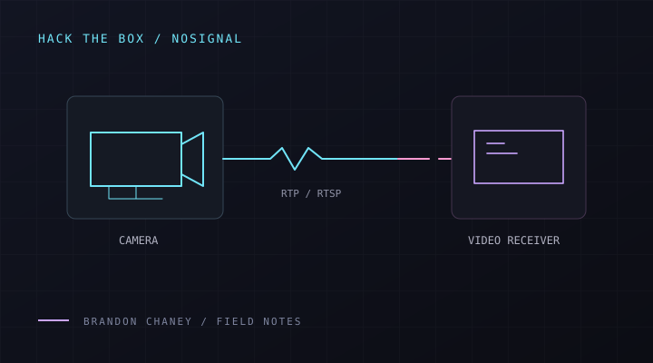

FIELD NOTES / 01HACK THE BOX / SHERLOCK · DFIR
NoSignal: following the CCTV traffic
Analyzing CCTV network traffic to uncover port scanning, credential attacks, unauthorized camera access, and video stream disruptions using TShark.
TSharkCCTVHack The Box
Read on GitHub